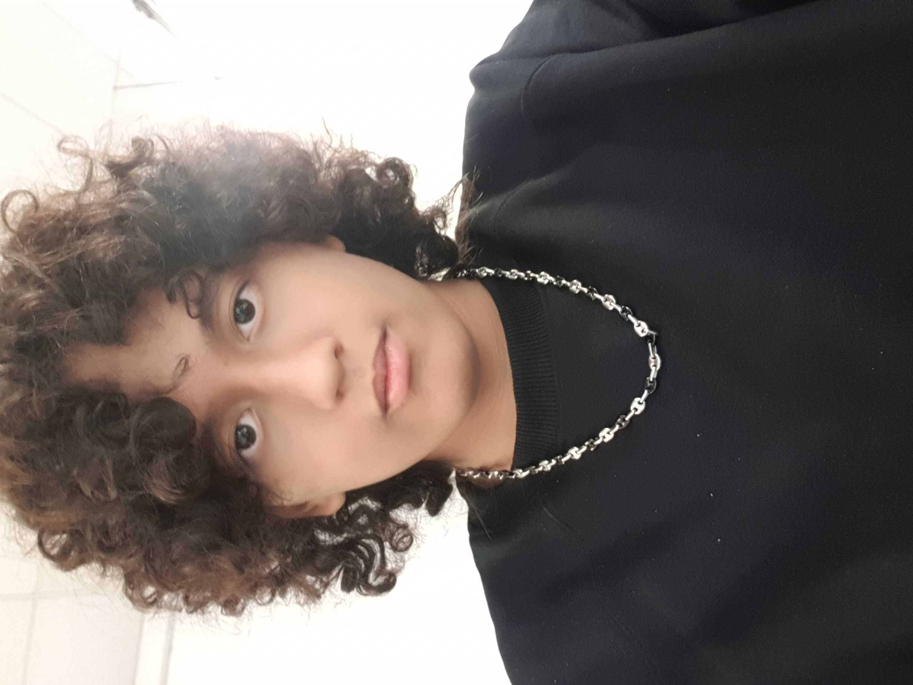

Sono Adam Boulal, sono cresciuto a moncalieri precisamente a tagliaferro. Ho diversi interessi uno di questi può essere la cucina che mi appassiona molto, poi c'è il fai-da-te che faccio insieme a mio padre da quando sono piccolo e infine un'altra mia passione un pò più particolare è la meditazione che mi aiuta a riflettere su chi sono e su cosa voglio fare nella vita. In più come competenze extra-scolastiche pratico pugilato da qualche anno, so suonare il pianoforte , e so parlare arabo. Dopo la scuola ci sono 2 cose che voglio fare, cercare di diventare un campione nella boxe e quello più importante è fare soldi per questo voglio iniziare subito a lavorare anzichè andare all'università. Una citazione che mi piace molto è :"preferisco restare felice nell'illusione anzichè triste nel sapere" mi piace molto perchè si focalizza sul fatto che meglio essere felici anzichè sapienti.
